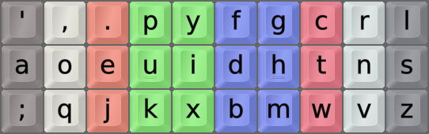
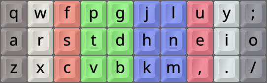
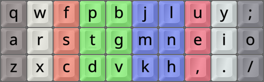
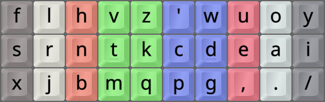
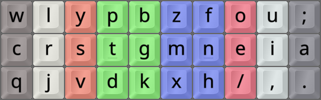
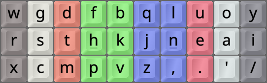
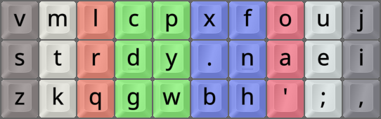
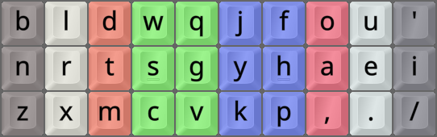

DISCLAIMER: THIS PAGE IS A WORK-IN-PROGRESS!
|  |
 |
 |
|  |
 |
 |
|  |
 |
 |
Some alternative layout alternatives over the years
NOT PERFECT, BUT PERFECT FOR ME?
To Be, Or Not To Be?
As mentioned, I've used the Colemak layout for 18 years or so. Before that, I used the Dvorak layout for some years.
-
I've been very happy with Colemak for all these years. I'm sure you could, too.
-
At the same time, I don't regret the upgrade from Dvorak. So there can be value in a change.
-
People tend to spend a lot of time and effort on finding the right layout for them.
-
Too little (settling for a subpar layout) and too much (tiresome layout hopping) should both be avoided.
-
While nearly anything beats the proverbial crap out of QWERTY, ...
-
It isn't easy to navigate the waters of alt layouts.
So Much To Choose From
There's an abundance of newer layouts, keeping less QWERTY similarity and using more metrics than Colemak.
-
The test of time has shown Colemak to be a well-made layout. Lots of work went into its design and testing.
-
There are only a few of the newer layouts that are well-tested over time by many experienced layout users.
-
Some think the more metrics the merrier, but at the same time there's still a big need for human assessment.
Priorities, Priorities
Differences of priority lead to different ideal choices. Some example points:
-
Ease of learning/implementation. Examples: Colemak, Tarmak, Minimak – but that one's way too poorly optimized.
-
One-hand rolls (Colemak etc) vs hand alternation (Graphite/Gallium etc), lateral stretches, redirects ...
-
To some extent, hardware/software options. For instance, standard implementations vs programmable keyboards.
-
Languages used, and how much of each. For example, `J` is very rare in English but less so in Spanish.
-
What you type in general. Chatting, coding and scientific writing, for instance, are very different things.
-
For most people though, I think that a layout that works well for their main language(s) is the important thing.
-
Anything else, including Vim commands and special characters, are readily done as modular add-ons and layers.
Colemak: A Goldilocks Layout?
My feeling is that Colemak is a very good layout for nearly everyone, as a sweet spot of priorities.
-
I've been a very happy Colemak user for nearly two decades. All in all, it's remarkably well made and balanced.
-
It has a good balance of ease of learning and implementation vs optimization.
-
It has a good balance of familiarity and novelty, being well-tested and well-designed.
-
It has good hardware and software support, and an active and helpful community.
-
Decide on "Vanilla" vs DH, and whether to add further mods (see colemak.org). Most implementations are ready-made.
Compared to other worthy alternatives, Colemak is easy to learn.
-
It keeps rarely used letters in their old positions, without losing anything important.
-
It keeps punctuation in old positions, but you can opt for an add-on Sym ergo mod should you wish.
-
It keeps ZXCV in place, which may or may not matter to you; it's a relatively harmless design choice.
-
The Tarmak transitional layouts allow you to learn Colemak in up to five "baby" steps, should you wish to.
-
If ease of learning and/or implementation matter to you, Colemak is definitely my suggestion.
Colemak(-DH) is the layout I've been using for nearly two decades. So nice.
For its design limitations, Colemak keeps a very nice set of metrics, well suited for most users.
-
Relative to several other popular layouts, Colemak has many rolls, which feels nice and flowy.
-
A slight downside is that more rolls usually leads to more suboptimal patterns such as redirects/pinballs.
-
Most issues that newer layouts try to solve, I've found to be fixable by alt-fingering or easy to live with.
Delving Deeper?
If really set on venturing past Colemak, you could try out Gralmak?
-
The Gallium/Graphite/Gralmak layouts are new (2023–2025) and very well optimized.
-
They keep similarities with familiar layouts. This includes row/column assignments, punctuation in Gralmak, etc.
-
Even if you end up wanting even more radical optimization, Gralmak can still be a useful stepping-stone.
-
If after learning Gralmak for a while, you still want to proceed: Go on to full Gallium/Graphite(-HB) or something similar.

Gralmak is a variant of the modern Graphite layout, incorporating some Colemak principles.
Knowing What's Good For You
I said it above, and I'll say it again:
I don't wish for anyone to keep hopping around the rabbit hole of alt layouts any more than they have to.
However, some people just have a lot of hop in them! And some have lots of time, energy and motivation to explore.
Resources
As mentioned elsewhere, these two guides are great starting points for learning about layout
alternatives.
If you really want to study and discuss further, I suggest you join the Alt Keyboard Layouts Discord server.
There are several advanced layout analyzers available that utilize the most modern metrics and methods.
Some of them are:
Assessing
It's actually really hard to assess a new layout fairly, unless you're an expert – and even if you are one.
-
Every layout has its strong and weak points.
-
You'll feel some good things but ignore some bad ones, and vice versa.
-
It'll take time to understand a layout's features.
-
Especially when they affect typing flow, which you won't have at first.
-
Before you are up to speed, it's not easy to notice what works and what doesn't at your full speed.
-
Not all of us will ever type really fast! So there's that, too.
-
If something's mostly noticeable at, say, 120+ WPM and like me you'll likely never get there, what then?
-
What you've known and used beforehand will significantly influence your experience.
Tips For Assessing A New Layout:
Below is a tip from Casuanoob at the Cmk Discord about judging how a new layout really works for you.
Assess Progress Success
-
Take notes of pain points and annoyances about the layout while getting up to 60 WPM, imo, and ...
-
Make a decision somewhere between 60 and 100.
-
Personally, I ended up making decision points at 80 WPM.
-
I feel like if you go much faster, you end up coping with some things to the point where you forget that you actually disliked them.
-
So maybe not wait until 100, unless you get speed up fast like some people do?
-
There's definitely some gulf in experience between 60 and 80 WPM where you haven't actually started rolling any keys at all, so ...
-
The experience before 60 WPM doesn't actually fully reflect either.
-
Note: Since everyone has different base speed and learn at different paces, obviously the numbers here should be adjusted to your situation.
Casuanoob's speeds at the time of writing (early 2025) were between 80 WPM for text with punctuation and 110 WPM for 1-minute MT Eng200 tests.
Summa Summarum
There is no undisputed king of keyboard layouts, and there won't be.
You get to a point where individual preference and usage patterns start to matter more than objective aspects, and then you can't agree on a one-layout-fits-all.
I believe we're already about there, pretty much.
New tech may yet improve typing, but the main barrier to speed is actually mental load. A really good development should make typing simpler, not more complex.
As stated elsewhere, my firm belief is that your time is far better spent on learning to use layers, mods and other tools well than on chasing a mythical "perfect" base layout.